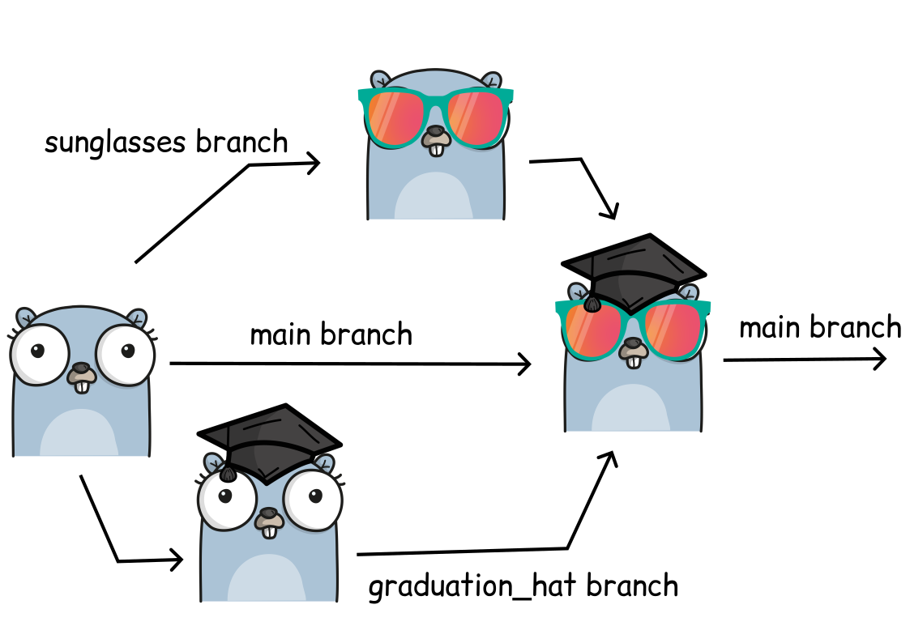
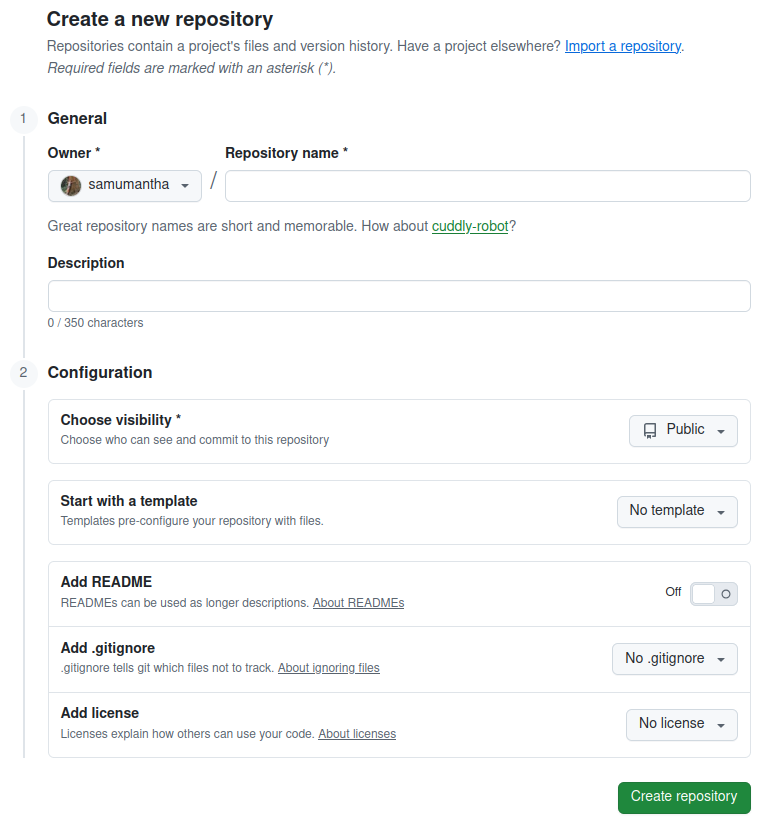
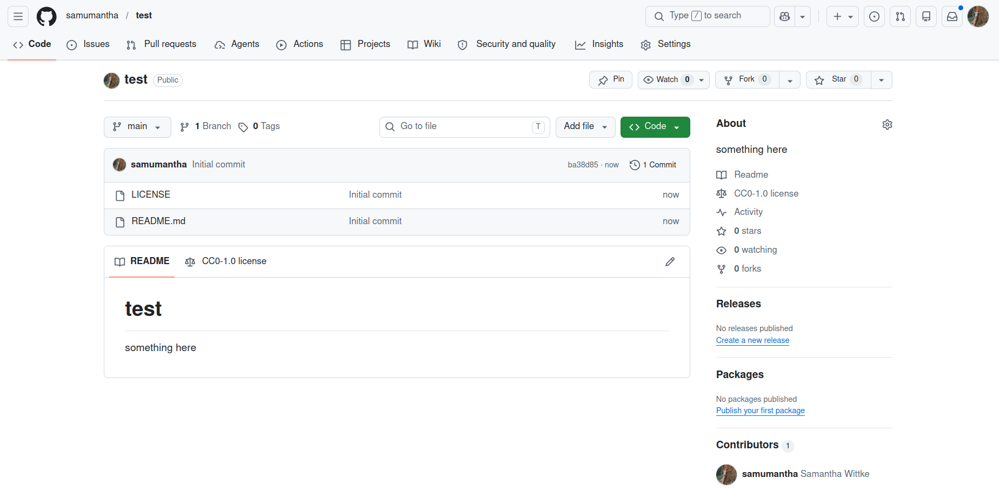
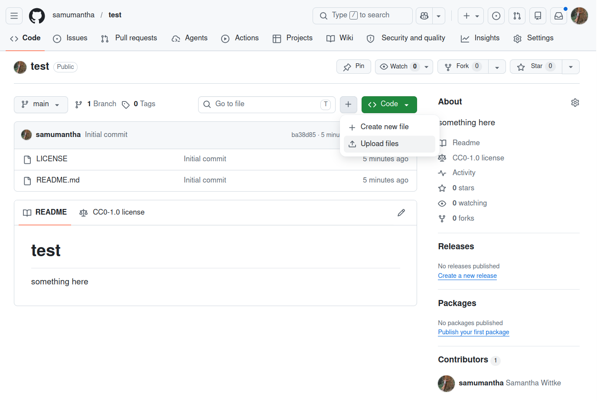

Introduction to version control
Objectives
Understand the basic principles of version control
Utilize the basic features of git on GitHub
These materials is adopted from CodeRefinery lesson “Introduction to version control” with focus on working online with GitHub.
It is normal, that all the new terms and concepts may be overwhelming. Take it as a starting point, and come back when you want to try something new. You may not have use for these tools yourself, but good to know anyway to potentially forward researchers.
Version control is the practice of tracking and managing changes over time.
You can think of version control like regularly taking a photo (“snapshot”) of your work.
Why is version control relevant for data stewards?
You may not write code yourself, but as a data steward, you may:
Review research software or repositories linked in a data management plan
Advise on reproducibility and transparency
Help researchers choose appropriate platforms
Interpret repository structure, history, and licensing
This lesson gives you the vocabulary and mental model needed for those tasks.
Why do we need to keep track of versions?
Problem: If you have to identify and find your code from 17 days ago, can you?
Version control is an answer to the following questions (do you recognize some of them?):
“It broke … hopefully I have a working version somewhere?”
“Can you please send me the latest version?”
“Where is the latest version?”
“Which version are you using?”
“Which version have the authors used in the paper I am trying to reproduce?”
“Found a bug! Since when was it there?”
“I am sure it used to work. When did it change?”
“My laptop is gone. Is my thesis now gone?”
Features: roll-back, branching, merging, collaboration
Problem: Your code worked two days ago, but is giving an error now. You don’t know what you changed.
Problem: You and your colleague want to work on the same code at the same time.
Roll-back: you can always go back to a previous version and compare
Branching and merging:
Work on different ideas at the same time
Different people can work on the same code/project without interfering
You can experiment with an idea and discard it if it turns out to be a bad idea
{kind=link}

Image created using https://gopherize.me/ (inspiration).
Collaboration: review, compare, share, discuss
With version control we can annotate code (browse this example online):

Example of a git-annotated code with code and history side-by-side.
Talking about code, showing someone your code
“Clone the code, go to the file ‘src/util.rs’, and search for ‘time_iso8601’”. Oh! But make sure you use the version from August 2023.”
Or I can send you a permalink:

Permalink that points to a code portion.
Terminology: Git repositories - a place to store
“A repository is the most basic element of GitHub. It’s a place where you can store your code, your files, and each file’s revision history. Repositories can be owned by persons or organisations, have multiple collaborators and can be either public or private” -Adapted from https://docs.github.com/en/repositories/creating-and-managing-repositories/about-repositories
Locally, a Git repository is the .git/ folder inside a project. This repository tracks all changes made to files in your project, building a history over time. Meaning, if you delete the .git/ local folder, then you delete your local project’s history.
Demo - exploring a repository online
Exercise
Let’s browse the numpy repository on GitHub.
Numpy is a popular Python package used in almost all research code. It has a large community of contributors.
Check out the main page: Source code, README, LICENSE
Contributors
Branches
History
Commits
Clone
Consider:
What signals project maturity?
Where would you look for licensing or contribution rules?
How easy would this be to cite or reuse?
Terminology: Commit
“A commit is a snapshot of current state of your repository … like taking a picture with metadata”
Commits include information, such as
Who changed/created something?
What was changed/created?
When was it changed/created?
In addition we can (should) provide information on:
Why was it changed/created? -> This information we have to provide in the commit message!
-> Commit messages make the history that we can browse.
TODO: Link to funny commit messages webpage?
Terminology: Clone - download
Cloning is a wat get the latest (working) version of a repository to your computer.
Cloning also includes the history and is therefore preferred over “pure” download or copy/paste of content.
Terminology: Git vs GitHub
Git is a tool/format for version control. It can be used via the terminal or be inbuilt to integrated development environments (IDE) like VSCode, RStudio, Jupyter. Alternative tools are for example Subversion,Mercurial, or Pijul.
GitHub is a hosting service for Git repositories with web interface. It is one place to find the source of software, webpages, presentations, books, games, and a place to collaborate and share. Alternative services for example GitLab and Codeberg.
What we typically like to version control (/”track”)
Software (this is how it started but Git/GitHub can track a lot more)
Scripts
Documents (plain text files much better suitable than Word documents)
Manuscripts (Git is great for collaborating/sharing LaTeX or Quarto manuscripts)
Configuration files
Website sources
Data (better options available!)
Do not use git for:
Secrets
Passwords
Binaries (e.g.
.exefiles)Files generated from builds
Difficulties of version control
Despite the benefits, let’s be honest, there are some difficulties:
One more thing to learn (it’s probably worth it and as a researcher, it will save you more time in the long run; basic career skill).
Difficult if your collaborators don’t want to use it (in the worst case, you can still use version control on your side and email them versions).
Advanced things can be difficult, but basics are often enough (ask others for help when needed).
Why Git and GitHub
Why git?
Easy to set up: no server needed.
Very popular: chances are high you will need to contribute to somebody else’s code which is tracked with Git.
Distributed: good backup, no single point of failure, you can track and clean-up changes offline, simplifies collaboration model for open-source projects.
Important platforms such as GitHub, GitLab, and Bitbucket build on top of Git.
Note that many organisations have their own In-house GitLab: This lets you host your own repositories safely within the walls of your organisation.
For collaboration in the Nordics we have the Nordic GitLab hosted by DeIC, hosted on servers in Denmark.
Exercise: Our first repository
Exercise
Let’s create our first online repository! We pretend to be a researcher writing some code on their own computer who now wants to collaborate with others and use GitHub for it. This is a beginner scenario, avoiding separate tools and use of command line. See below for workflow when using Git(Hub) more than once in a while.
Create a plain text file on your computer, using a text editor of your choice.
Fill it with some (random) text.
Save the file (somewhere) on your computer, call it
random.txt.Now we open github.com and log in.
To deposit our text file, we first need to create a repository. 5.1 Click the plus button top right of the github page > New repository.
{kind=link}

The “create repository” interface on GitHub.
5.2 In the form:
set your own username as the owner
choose a repository name, needs to be unique for your namespace
Add a short description of what this repository is for
Choose if you would like the repository to be public or private. If you can, always choose public, though you can also change later.
We will not be using any template, though they can be super useful for similar projects
We want to add a README, so let’s turn that switch to on.
We do not need a .gitignore at this point. This is important when you work locally and want to exclude some of your local files from being tracked
And it is good practice to right away add a license, e.g. CC0, Creative Commons Zero.
Then click create repository.
We have now created an empty repository!
{kind=link}

An empty repository after creation.
Now upload your text file, that we created earlier
Find the plus (“add file”) button next to the bigger green “code” button in your repository
Click “upload files”
{kind=link}

Adding a file to the repository on GitHub.
After drag and dropping or finding your file from your computer, we need to commit it to the repository
For that write a short commit message that tells why you added the file. You can, but don’t have to add an extended description
We choose “commit directly to the main branch”
And “commit changes”
You now have created your own repository and added a file! You can explore the history to observe your progress :) The link to your repository is your post-day 4 assignment which needs to be submitted via moodle.
Exercise: Editing files online
Exercise
Let’s now use the GitHub web interface to edit a file that is already there. This can be very handy when you just want to edit something small in one file. For larger edits, we refer again to the workflows below. Though, GitHub these days also provides online editors. Something to explore by yourself.
In your repositories main page
github.com, find theREADME.mdfile and click itNow find the edit button, pen symbol on top right of the README.md page
Edit the text in your README.md, you can for example write that this repository is part of an exercise in the Data Steward training 2026.
Safe your edits. Observe how it is the same procedure as when uploading new file, branch, commit message.
Scenarios for working with GitHub by yourself
Starting a new repository
Create a new repository:
Namespace (your own username vs organization)
Name (unique and descriptive)
Description (What will help you remember what this repository is for?)
README (always good to add a README)
LICENSE (good to add one as early as possible)
.gitignore(this becomes important when you work with git and GitHub on own computer)
Add new file:
Edit
(Special: license/citation.cff)
Commit
main
Working with my own GitHub repository
… on GitHub (see also exercise above!)
Work on single files, and one at a time …
Commit when done: take snapshots of units of work (one file at a time)
Working on GitHub can be useful for small edits, like fixing a typo or changes that relate to a single file.
… locally
Clone: get a copy of the content (with metadata and history) to my computer
Work on it using any editor, make updates, add files, remove files, …
git add and git commit: take snapshots of units of work (can be changes in one or many files)
Push: submit snapshots to GitHub, so that others can see
When you get back to it later: Instead of clone, you git pull: Get latest version from GitHub
See also next lesson.
Keypoints
git is a popular version control tool, often used together with GitHub, an online hosting platform
Various usage scenarios exist